01 / A common model for two analysis tools
A common model for two analysis tools
The project examines the crank-slider mechanism used in an inline engine. Its purpose is to calculate piston and connecting-rod motion in MATLAB, simulate the same mechanism in SolidWorks, and compare the results at a shared operating position.
The original report includes the mechanism geometry, analytical relationships, model assumptions, software outputs and a comparison at one complete crank revolution.

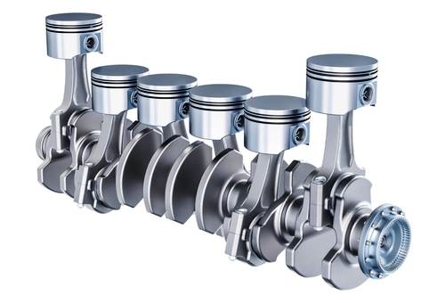

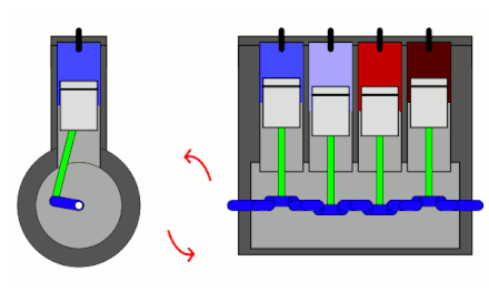
02 / How the crank-slider moves
How the crank-slider moves
A rotating crank drives a connecting rod, which constrains the slider to reciprocate along its guide. The crank, connecting rod, slider and fixed frame form the mechanism studied here.
Top dead centre and bottom dead centre mark the extreme slider positions. The distance between them is the stroke. At these positions the crank and connecting rod are collinear.

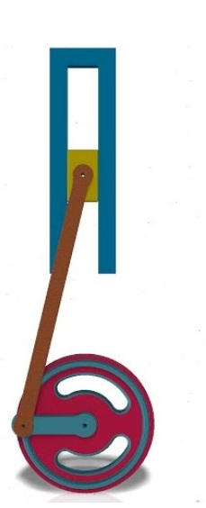
One degree of freedom
The planar model contains four links, three revolute joints and one prismatic joint. Its mobility calculation gives one degree of freedom, so one actuator defines the motion.
DoF = 3(L − 1) − 2R − 2P − H
= 3(4 − 1) − 2(3) − 2(1) − 0 = 1
03 / Building the analytical model
Building the analytical model
The original equation figures provide the definitions and relationships used to calculate position, velocity and acceleration. Keeping the geometry and sign conventions consistent is essential when comparing the two software models.

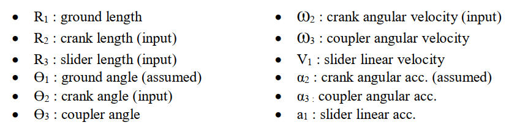

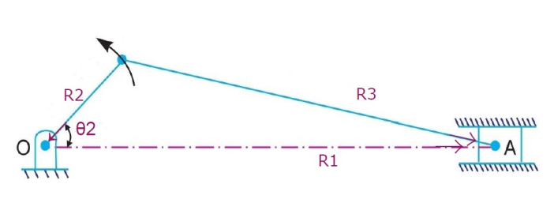

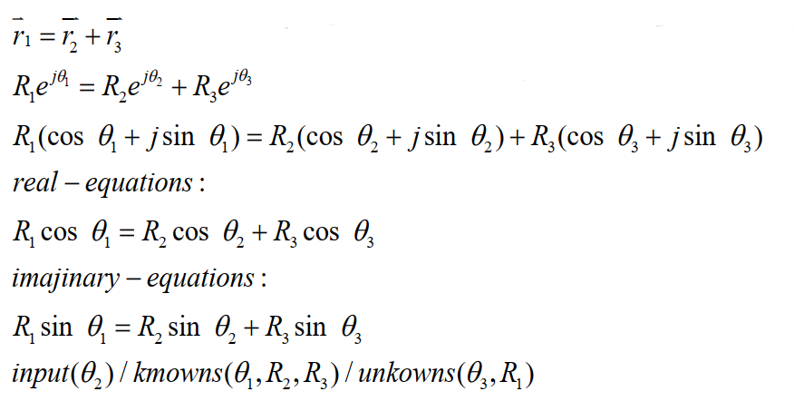

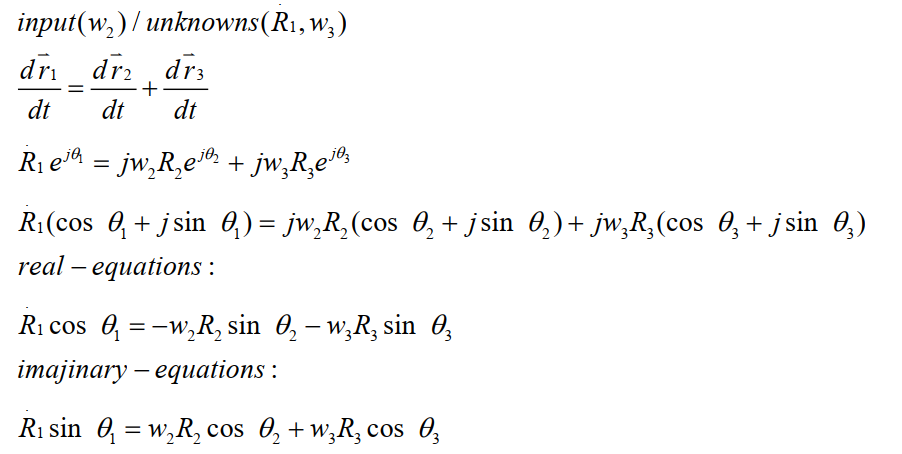

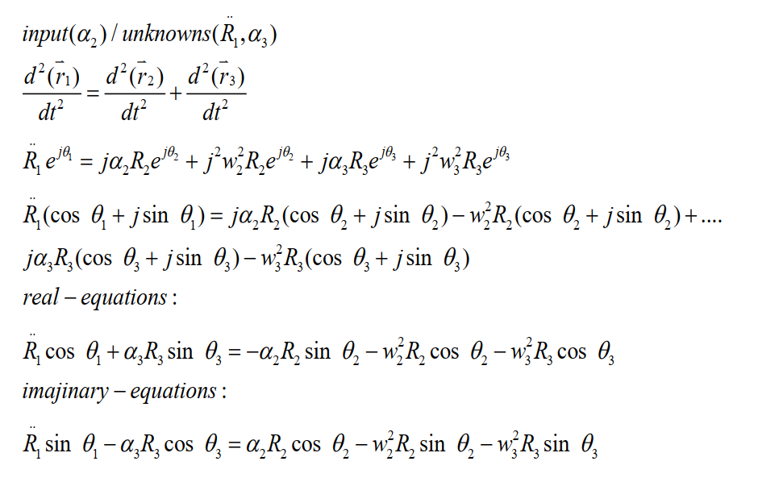
04 / Defining the comparison case
Defining the comparison case
The case study starts with the crank and connecting rod collinear at an extreme position. The original model assumptions and the starting configuration are shown below.

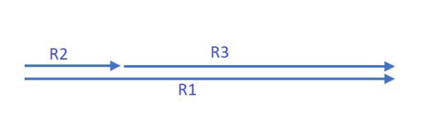

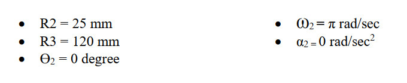
The comparison uses the reported instant t = 2 s, corresponding to a crank angle of 2π rad (360°). The two result sets are compared at that same mechanism configuration.
05 / Analytical results in MATLAB
Analytical results in MATLAB
A MATLAB interface presents the kinematic results in terms of input crank angle. The original plots document the slider and coupler response for the chosen geometry and motion inputs.


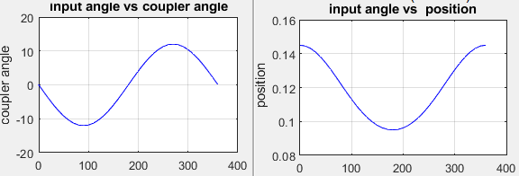

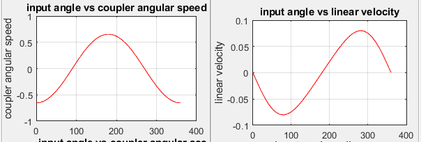

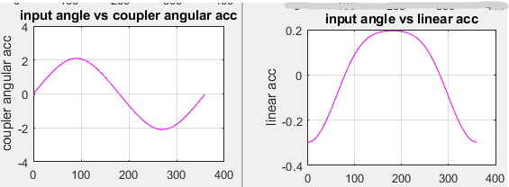
06 / Motion-study results in SolidWorks
Motion-study results in SolidWorks
The 3D assembly was used to produce time-based motion results. The following plots show the piston and coupler separately, grouped by the quantity being measured.
Position

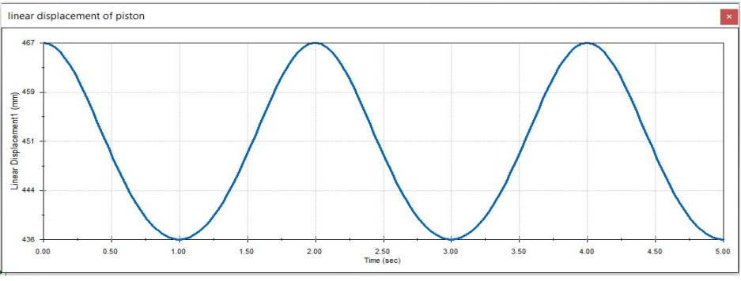

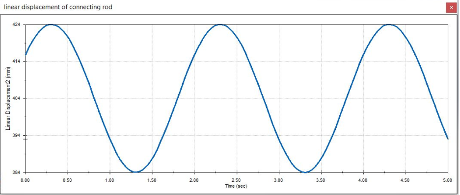
Velocity

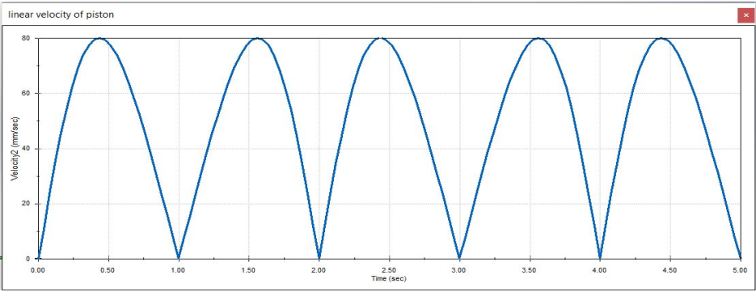

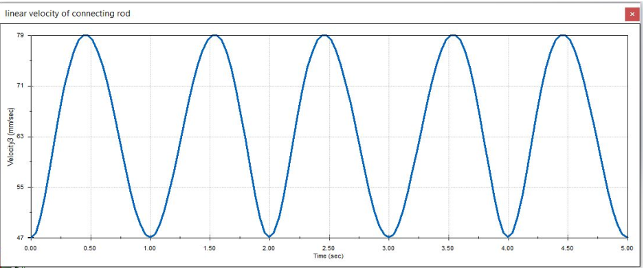
Acceleration

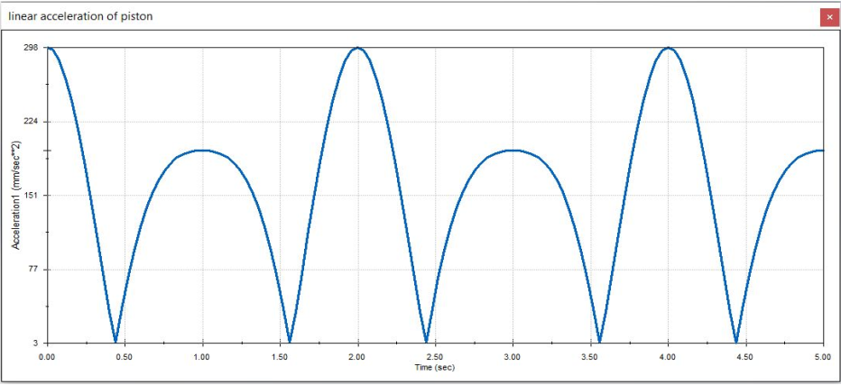

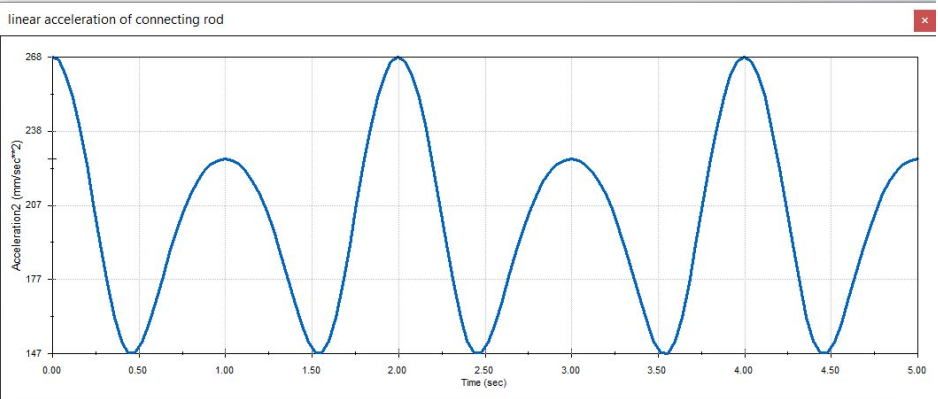
07 / Comparing the same instant
Comparing the same instant
The original position plots use different coordinate origins, so they are not compared directly. Velocity and acceleration are evaluated at the reported common configuration, with corresponding quantities and conventions.
| Quantity | Reported agreement |
|---|---|
| Slider velocity | Zero in both models at the extreme position |
| Acceleration magnitude | Approximately 298 mm/s² in both models |

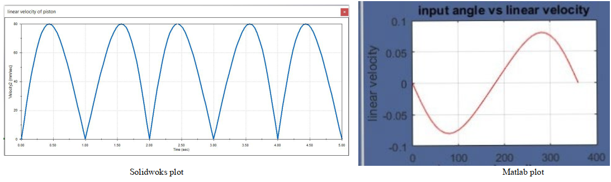

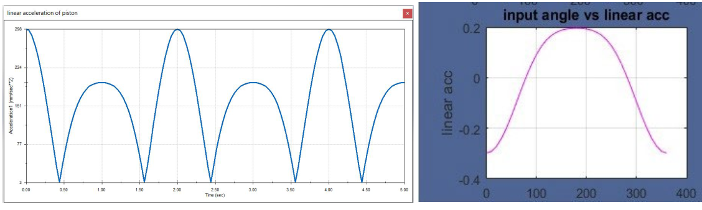
The comparison illustrates agreement at the documented case-study point. It should not be read as a quantified validation over every angle or every possible geometry.
08 / What the comparison shows
What the comparison shows
MATLAB exposes the analytical relationships with crank angle, while SolidWorks visualizes the assembly and provides time-based motion results. Aligning the operating point makes the two approaches useful checks on one another.
The project demonstrates a complete kinematic workflow: define the mechanism, derive the equations, build the models and compare corresponding outputs.